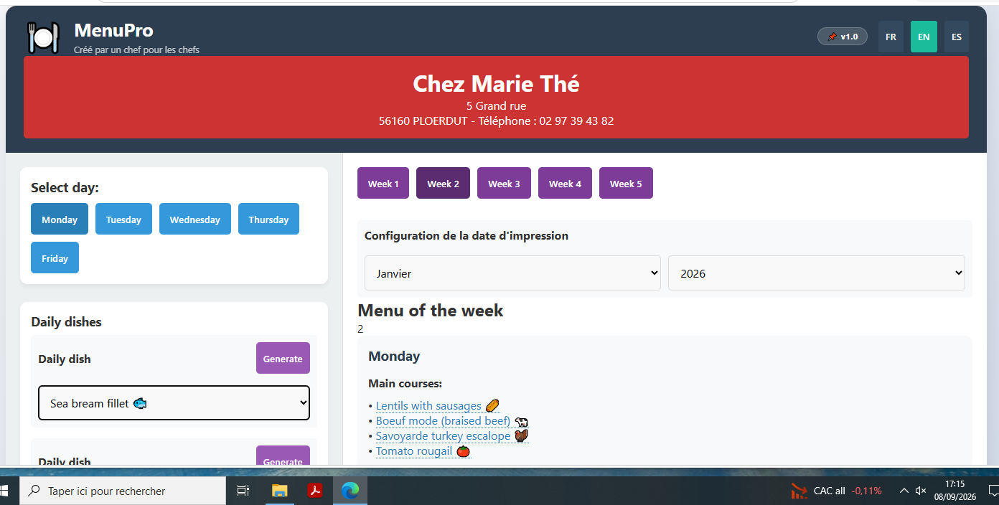
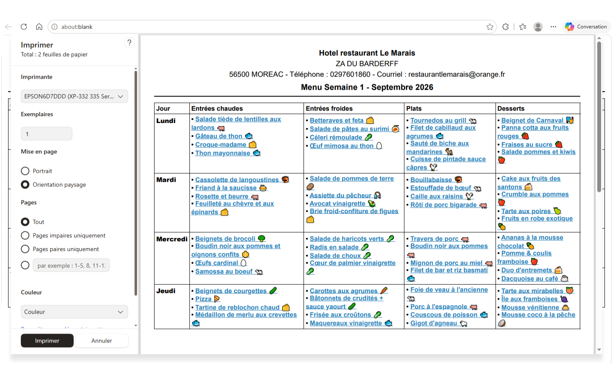
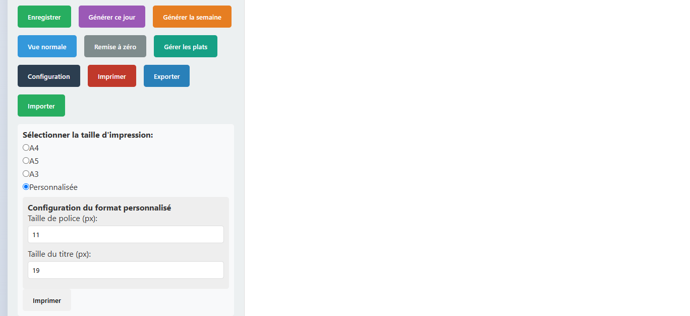

Génération instantanée
Cliquez sur "Générer" et choisissez parmi des centaines de plats organisés par type : entrées, plats, desserts.
4 plats du jour, livraison le lundi, commande le vendredi. MenuPro génère 15 jours de menus d'un coup — avec pictogrammes porc, poulet, poisson.
🚀 Essayer gratuitementPourquoi un cuisinier a créé ce logiciel — et pourquoi ça change tout.
Je m'appelle Sébastien, je suis cuisinier. J'ai commencé en brasserie : une carte, un menu du jour. Facile, peu d'anticipation.
Puis j'ai changé de type de restauration. Je suis passé à la cuisine ouvrière. Là, tout change : je dois concevoir 4 plats du jour différents chaque jour.
Et il y a une contrainte que personne ne comprend avant de l'avoir vécue : nous sommes livrés chaque lundi en fin de matinée, et ma commande est envoyée le vendredi.
Traduction : le vendredi, je dois déjà connaître mes menus jusqu'au lundi suivant. Avant MenuPro, je rédigeais mes menus sur 15 jours en fin de semaine. Des heures perdues, chaque semaine.
Ce programme m'a permis de gagner un temps énorme. J'ai ma base de menus, et j'ajuste ensuite en fonction de la fréquentation.
Et comme les menus sont imprimables, ils peuvent aussi bien être affichés dans une cantine scolaire ou une maison de retraite. Les pictogrammes porc / poulet / poisson permettent d'identifier chaque plat d'un coup d'œil.
— Sébastien, cuisinier et créateur de MenuPro
Si vous vous reconnaissez ici, MenuPro est fait pour vous.
Des fonctionnalités pensées pour la vraie vie en cuisine.
Cliquez sur "Générer" et choisissez parmi des centaines de plats organisés par type : entrées, plats, desserts.
Identifiez chaque plat d'un coup d'œil. Idéal pour les menus affichés en cantine ou en salle.
Imprimez vos menus en A4, A5 ou A3 pour les afficher en salle, en cantine ou en office.
Vos données sont enregistrées sur votre ordinateur. Pas de compte en ligne, votre vie privée est garantie.
Chaque plat est un lien direct vers sa recette sur Google. Gain de temps pour votre équipe.
Interface disponible en français, anglais et espagnol pour s'adapter à toute votre équipe.
Restaurant, cantine, maison de retraite : même outil, même gain de temps.
4 plats du jour, anticipation des commandes, réduction des pertes.
Menus à afficher, pictogrammes, équilibre alimentaire.
Menus réguliers, faciles à afficher pour les résidents.
Livraison hebdomadaire, commande anticipée, 4 plats par jour.
Le même métier, mais sans les heures perdues.
Aucune inscription, aucune carte bancaire. Lancez-vous en 10 secondes.

⚡ Générez chaque plat du jour en un clic — entrées, plats, desserts.

🐷🐔🐟 Pictogrammes porc / poulet / poisson et liens directs vers les recettes.

🖨️ Imprimez en A4, A5, A3 — ou personnalisez la taille de police et du titre.
Commencez gratuitement. Passez à la licence complète quand vous êtes prêt.
💡 Paiement unique. Pas d'abonnement, pas de frais cachés. Vous payez une fois, vous gardez MenuPro à vie.
Tout ce que vous vous demandez avant de vous lancer.
Parce que le menu imprimé est le document de travail central de votre cuisine. La licence à 79 € débloque l'impression et l'export définitivement.
Oui ! Avec la fonction "Gérer les plats", vous copiez-collez votre propre menu et vos plats signature en quelques secondes.
Oui ! Une fois téléchargé, MenuPro est 100% local. Aucune connexion n'est nécessaire pour l'utiliser au quotidien.
Absolument. Les menus sont imprimables et affichables, et les pictogrammes porc / poulet / poisson permettent d'identifier chaque plat instantanément.
Non. MenuPro fonctionne avec une licence à vie à 79 €, en paiement unique. Pas d'abonnement, pas de frais récurrents.
MenuPro fonctionne sur navigateur web (PC ou Mac) et peut être téléchargé pour une utilisation 100% locale sur PC.
Essayez MenuPro gratuitement. Pas d'inscription, pas de carte bancaire. Vous verrez le résultat en 30 secondes.
🚀 Essayer gratuitement